This is one of many analysis pieces used to create a story on Boston Public School buses tardiness.
Calculate various datasets.
data <- rawdata %>%
filter(
errortype == '',
schtype == 'BPS',
!is.na(bell_late),
!is.na(sched_late),
!is.na(ActualArrivalTime),
!is.na(PlannedAnchorTime),
!is.na(belltime)
) %>%
mutate(
PlannedAnchorTime = hm(PlannedAnchorTime)/minutes(1),
ActualArrivalTime = hm(ActualArrivalTime)/minutes(1),
belltime = hm(belltime)/minutes(1),
plannedBeforeBell = (PlannedAnchorTime <= belltime)
) %>%
mutate(
date = dmy(date),
five_late = ((ActualArrivalTime - belltime) + 5),
is.five.late = plannedBeforeBell & (five_late > 0)
) %>%
filter(plannedBeforeBell)
# date, five_late, count
# each row is a count of bus arrivals for that day and minute
lateTrips <- data %>%
filter(is.five.late) %>%
group_by(date, five_late) %>%
tally() %>%
rename(count = n) %>%
ungroup() %>%
arrange(date)
# date, late.trips
# each row is a count of late trips for that day
lateTripsPerDay <- lateTrips %>%
group_by(date) %>%
summarise(late.trips = sum(count)) %>%
arrange(date)
# date, early.trips, late.trips
# each row is a count of total/early/late trips for that day
tripsPerDay <- data %>%
group_by(date) %>%
tally() %>%
rename(total.trips = n) %>%
inner_join(lateTripsPerDay, by=c('date')) %>%
mutate(early.trips = total.trips - late.trips) %>%
arrange(date)
write.csv(lateTrips, 'output/lateTrips.csv', row.names=F)
write.csv(tripsPerDay, 'output/tripsPerDay.csv', row.names=F)This is a story about buses. Boston Public School buses. On any given day, hundreds of buses carry thousands of kids to school. Here’s September 4, the first day of classes.
tripsPerDay %>%
mutate(is.first = row_number() == 1) %>%
head(3) %>%
ggplot(aes(date, total.trips, alpha=is.first)) +
geom_bar(stat='identity') +
theme(legend.position='none') +
scale_alpha_manual(values=c(0, 1)) +
ylab('bus trips')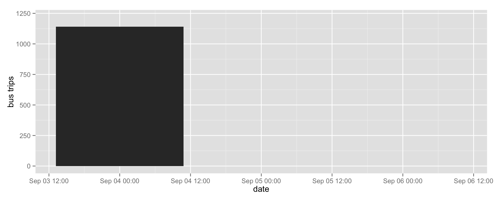
And here’s the rest of the year.
tripsPerDay %>%
ggplot(aes(date, total.trips)) +
geom_bar(stat='identity') +
theme(legend.position='none') +
ylab('bus trips')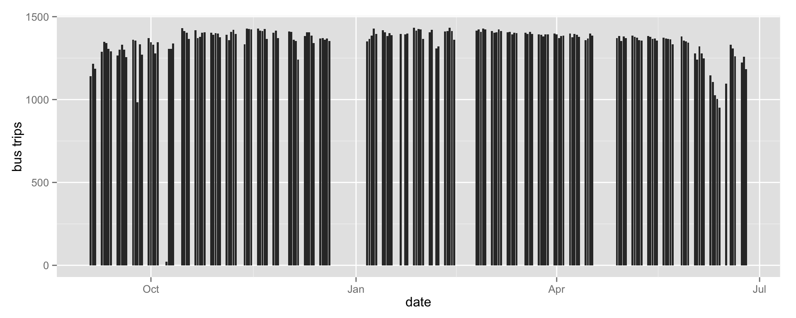
Over 14% of buses arrived late.
data <- melt(tripsPerDay, id=c('date')) %>%
filter(variable %in% c('early.trips', 'late.trips'))
ggplot(data, aes(date, value, fill=variable, color=variable)) +
geom_bar(stat='identity') +
scale_colour_manual(values=c('#ea212d', 'grey80')) +
theme(legend.position='none') +
ylab('bus trips')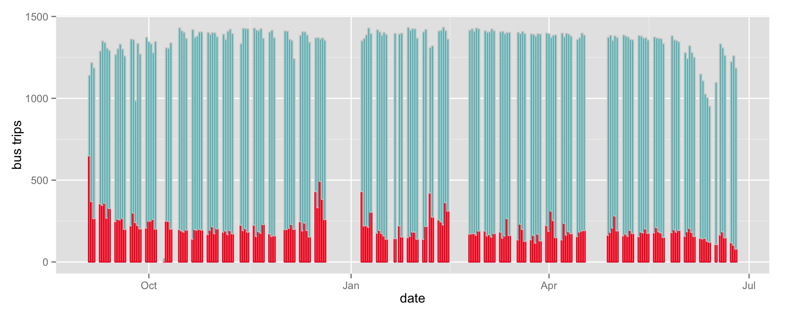
ggplot(tripsPerDay, aes(date, late.trips)) +
geom_bar(stat='identity', fill='#ea212d')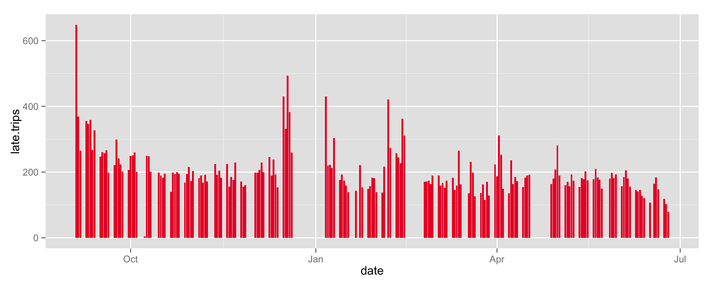
On the first day of school, 648 buses show up after the bell.
tripsPerDay %>%
mutate(is.first = row_number() == 1) %>%
head(3) %>%
ggplot(aes(date, late.trips, alpha=is.first)) +
geom_bar(stat='identity', fill='#ea212d') +
theme(legend.position='none') +
scale_alpha_manual(values=c(0, 1))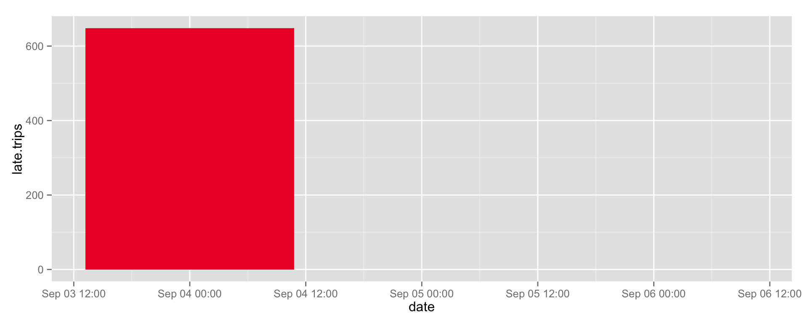
Most tardy buses arrive about 15 minutes late on the first day of school, but some show up over 90 minutes after the bell.
lateTrips %>%
filter(date == ymd('2013-09-04')) %>%
ggplot(aes(five_late, count, five_late)) +
coord_flip() +
geom_bar(stat='identity', fill='#ea212d')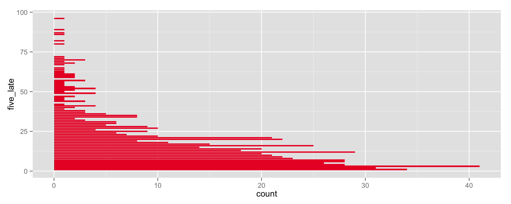
Over the school year, as drivers become familiar with their routes, tardiness decreases. But buses continue to arrive late.
lateTrips %>%
ggplot(aes(date, five_late)) +
geom_point(colour='#ea212d', size = 1)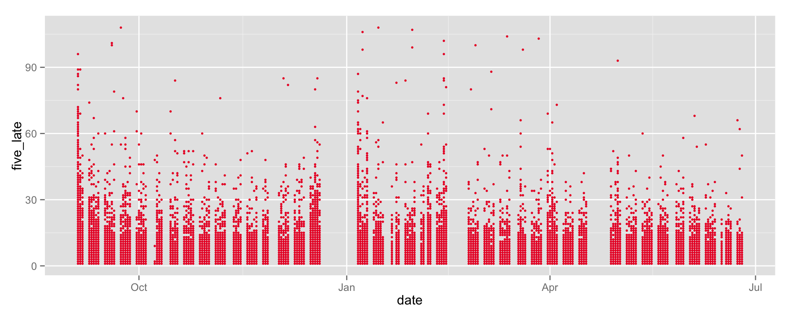
What about looking at the first week?
data <- lateTrips %>%
filter(floor_date(date, 'week') == ymd('2013-09-01'))
write.csv(data, 'output/a1_teaser.csv', row.names=F)
ggplot(data, aes(date, five_late)) +
geom_point(aes(size=count), colour='#ea212d') +
geom_point(shape=1, aes(size=count), colour='#59080d') +
scale_size_area(max_size=9)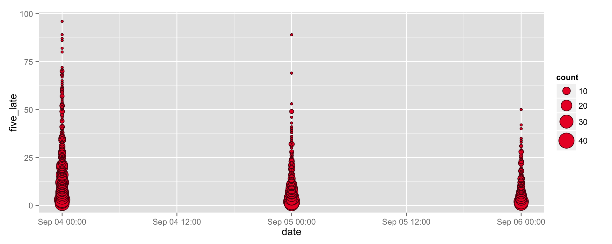
lateTrips %>%
filter(floor_date(date, 'week') == ymd('2013-09-01')) %>%
ggplot(aes(five_late, count, five_late)) +
coord_flip() +
geom_bar(stat='identity', fill='#ea212d') +
facet_grid(. ~ date)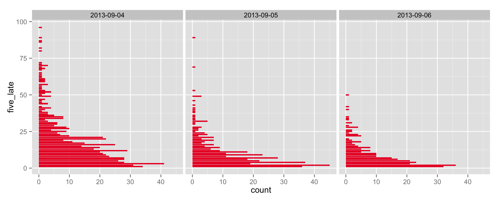
Are there weekly patterns? In other words, find the tardiness percentage for every day. Then do a histogram, facet by day of week.
tripsPerDay %>%
mutate(
day = wday(date),
pct = 100*late.trips/total.trips
) %>%
select(day, pct) %>%
ggplot() +
geom_boxplot(aes(day, pct)) +
facet_grid(. ~ day)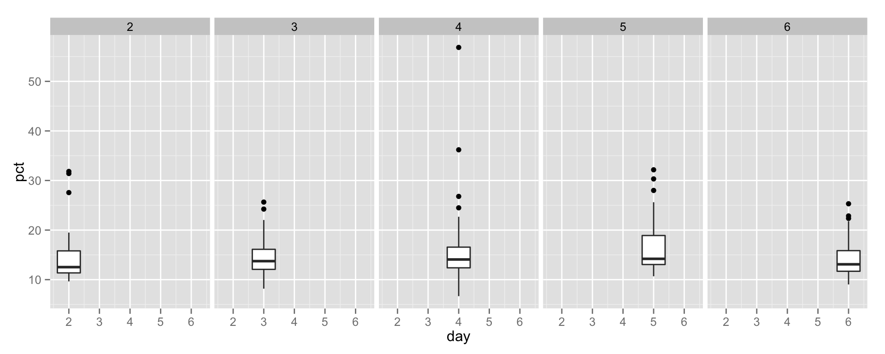
That doesn’t look useful. Let’s look at tardiness median per day.
tripsPerDay %>%
mutate(
day = wday(date),
pct = 100*late.trips/total.trips
) %>%
select(day, pct) %>%
group_by(day) %>%
summarise(median = median(pct)) %>%
ggplot(aes(day, median)) +
geom_bar(stat='identity')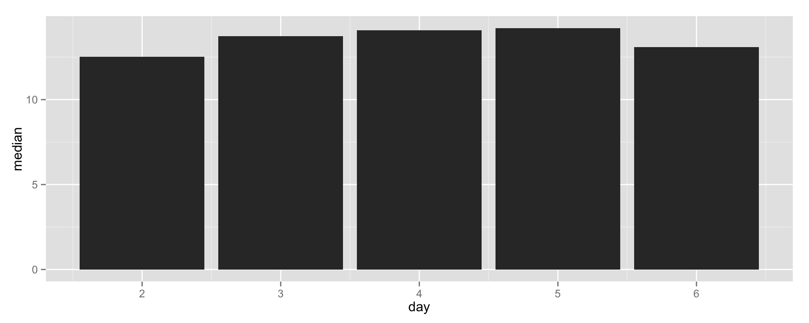